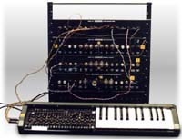

|
Owner, METASONIX, Redwood City, California USA e-mail: synth@metasonix.com History  Some people insist that science and technology advance by continuous and predictable movement. Yet many of the important advances of history have not occurred as a result of planning and R&D expenditure, but as blind accidents. Often, the perceptual weaknesses and limited artistic vision of real human beings tend to impede rather than assist the process of invention. The history of electronic music in the 20th century has followed such a path. Large research institutions, such as Bell Telephone Laboratories or RCA's research division, have made contributions of one kind or another. Yet the modern equipment of music bears very little resemblance to their contributions. Most of what we call a 'synthesizer' today came about as a result of the work of a few lone inventors with very little financial backing, and then selling their products to avant-garde composers who were willing to take a chance in order to explore a new musical world. The rest of the world's musicians tend to exhibit great inertia in the face of change, until the change becomes too great to ignore. Think of most of the major electronic keyboards and music devices before the early 1960s, when the Moog and Buchla synthesizers appeared. These 'presynths' tended to be exotic and unusual by prevailing standards. Yet they had little impact, even though most received great attention in their time. And in spite of their new design philosophies, these instruments usually followed a basic plan. The vast majority used a keyboard with top-octave division or a single LC oscillator with time constants switched in with the keys. This encompasses the Hammond Novachord (1939) and Solovox (1940), the Clavioline (1941), the Ondioline (1941) and the Univox (1946), its derivatives such as the Multimonika (1949), and virtually all electronic organs of the 1950s. Modulation was very primitive, usually involving selection of tremolo and key-down percussion effects; and waveform filtering was available only with fixed passive 'formant' filtering. The few devices outside this scheme usually had some kind of linear or position-controlled pitch selection rather than a keyboard. This includes the Theremin (1927), the Hellertion (1928), the Ondes Martenot (1928), the Trautonium (1928) and the Mixtur-Trautonium (1932). Except for the Theremin, these all used a linear strip controller or a moving indicator on a linear strip to control pitch. Waveform modulation was as simple as on the keyboard devices; infinitely-variable pitch control was considered radical enough already. The Theremin has proven to be the most popular of these instruments, although the Ondes and Trautonium have had some success with composers over the years. And automated devices, such as the RCA Synthesizer (1955) and the Kent Music Box (1951), were highly automated yet still limited in tonal effects and real-time modulation. All such instruments above were based on vacuum tubes or gas-filled tubes (in the case of the Trautoniums). It seems only an accident of history that GENERALIZED modulation systems and tone control only arrived with the Synket and the Moog and Buchla synthesizers, in the early '60s. All these were solid-state. Before 1961, tubes did not have the concepts of voltage control applied to them except in very primitive ways, such as pitch or tremolo. And tubes essentially disappeared from the scene until recently, as the electronics industry embraced the transistor and discarded what came before. This series of articles will show some circuits which can be used in a manner similar to the modular synths of Moog and Buchla. Yet, these new modules are 'pure', in that their signal paths can be implemented using only vacuum and gas tubes. No semiconductors are needed (except in control circuitry) to create a viable music system with the most extreme flexibility; patchable voltage control, a concept not previously seen with tube design. The result is an entirely new and little-known world of tonal variations, due to the unique linearities and nonlinearities of tubes. A note to readers: this circuitry is intended for the more advanced builder. Because high voltages are used, a shock hazard exists. We do NOT recommend that the novice DIY musician try to construct this synthesizer. Some experience with tube electronics is highly recommended. The construction will be presented as a series of modules, in the following order:
All these projects and designs should be considered dangerous if not lethal if not used safely.
When working on projects based on these designs, use extreme care to ensure that you do not come into contact with mains AC voltages or high voltage DC.
If you are not confident about working with mains voltages, or high voltages, or you are not legally allowed to work with mains voltages, or high voltages, you are advised not to attempt work on them. The author, host, and all people associated with these web pages disclaim any liability for damages should anyone be killed or injured while working on these projects, or projects based on these designs, or any other project or design presented on these web pages and any associated web pages.
The author, host, and all people associated with these web pages also disclaim any liability for projects, or projects based on these designs, or any other project or design presented on these web pages and any associated web pages when used in such a way as to infringe relevant government regulations and by-laws.
|
{kind=link}